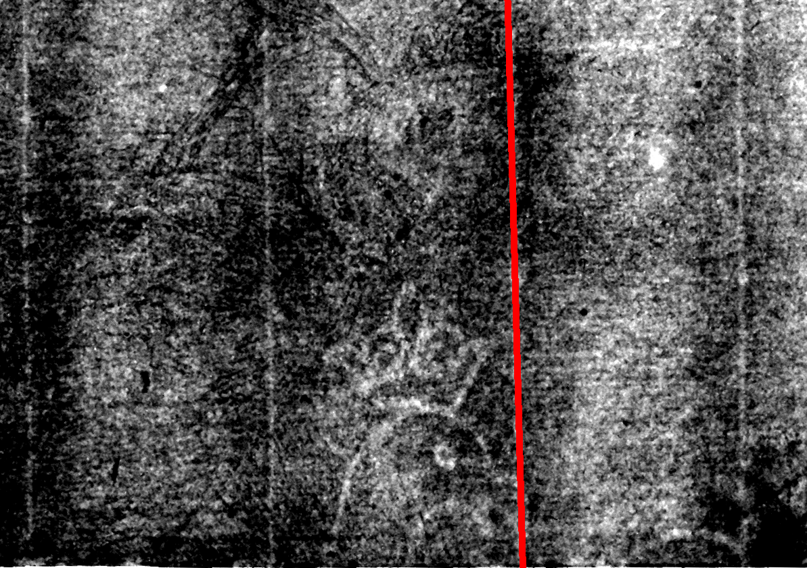

User's image to be matched
Single-Headed Eagle
See branch diagram↩ Back one step ↻ Restart this branch
Your watermark is Eagle, Single-Headed, A.a.
Watermark A.a. has three notable characteristics: the eagle does not contain a Basel crosier at its center, its wings point downward, and a chain line touches but does not intersect its beak (marked with red). Some of these characteristics are visible in this fragment image.
________________________________________________________________________
This watermark can be found on the following print:
Self-portrait (?) with jewel in cap, at the British Museum, London.
NOTE: This is a quarto sized print, meaning it was printed on one-quarter of a full sheet of paper. In the process of tearing the paper, the portion of paper containing the watermark was divided. This print contains a small portion of the watermark- just the eagle’s head and crown, so it is thus considered a fragment. Other print(s) made from this sheet of paper would contain the remainder of the watermark, and it is possible that an etching could be found that contains the complementary fragment.
(Erik Hinterding, Rembrandt as an Etcher, 2006, II, 104)
